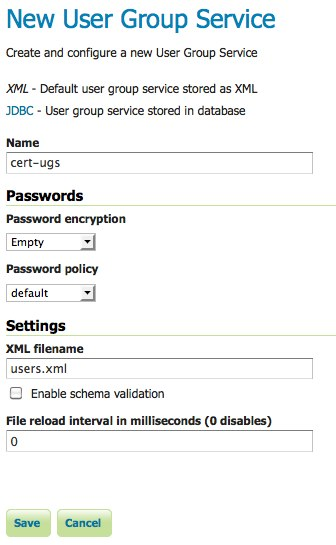
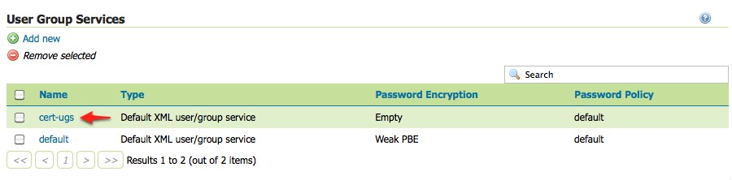
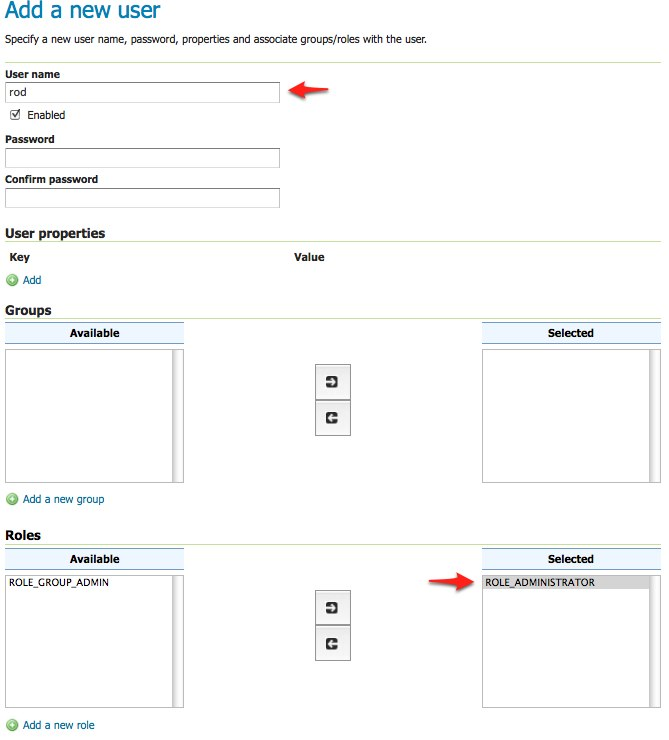
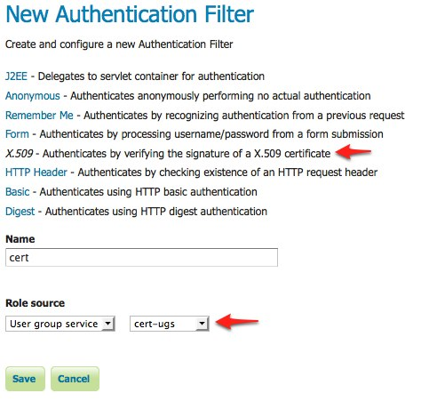
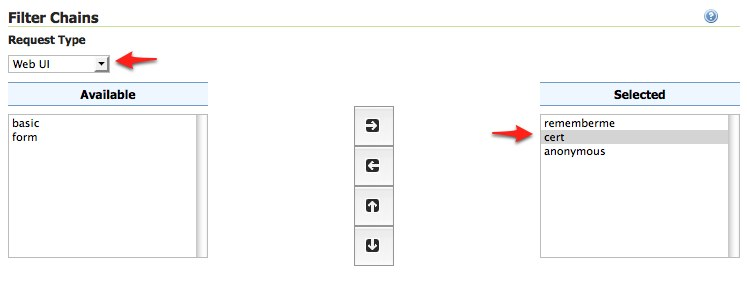
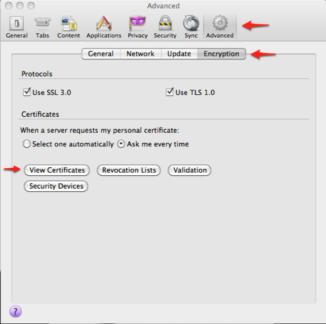
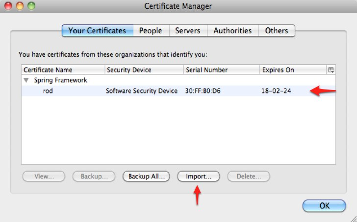
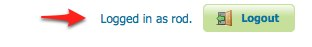

Configuring X.509 Certificate Authentication¶
Certificates authentication provides a much more secure alternative basic username password schemes that involves the usage of public/private keys to identify ones self. X.509 is a well defined standard for the format of public key certificates.
This tutorial walks through the process of setting up X.509 certificate authentication.
Prerequisites¶
This tutorial requires the following:
- A web browser that supports the usage of client certificates for authentication. This is also referred to as “two way SSL”. This tutorial uses Firefox.
- An SSL capable servlet container. This tutorial uses Tomcat.
Deploy GeoServer in tomcat before proceeding.
Configure the user group service¶
Users authenticated via X.509 certificate must be configured in GeoServer. For this a new user group service will be added.
Login to the web admin interface as the admin user.
Click the Users, Groups, and Roles link located under the Security section of the navigation sidebar.

Scroll down to the User Group Services panel and click the Add new link.
Create a new user group service named “cert-ugs” and fill out the settings form as follows:
- Set Password encryption to “Empty” since users will not authenticate via password.
- Set Password policy to “default”.
Save
Back on the Users, Groups, and Roles page click the cert-ugs link.
Select the Users tab and click the Add new user link.

Add a new user named “rod” the and assign the ROLE_ADMINISTRATOR role.
Save.
Click the Authentication link located under the Security section of the navigation sidebar.

Scroll down to the Authentication Filters panel and click the Add new link.

Click the X.509 link and fill out settings form as follows:
- Set Name to “cert”
- Set Role source to “User group service” and set the associated drop down to “cert-ugs”
Save.
Back on the authentication page scroll down to the Filter Chains panel.
Select “Web UI” from the Request type drop down.
Select the digest filter and position it after the anonymous filter.
Save.
Download sample certificate files¶
Rather than demonstrate how to create or obtain valid certificates, which is beyond the scope of this tutorial, sample files available as part of the spring security sample applications will be used.
Download and unpack the sample certificate files. The zip archive contains the following files:
- ca.pem is the certificate authority (CA) certificate issued by the “Spring Security Test CA” certificate authority. This file is used to sign the server and client certificates.
- server.jks is the Java keystore containing the server certificate and private key used by Tomcat and presented to the user during the setup of the SSL connection.
- rod.p12 contains the client certificate / key combination used to perform client authentication via the web browser.
Configure Tomcat for SSL¶
Copy the server.jks file into the conf directory under the root of the Tomcat installation.
Edit the Tomcat conf/server.xml and add an SSL connector:
<Connector port="8443" protocol="HTTP/1.1" SSLEnabled="true" scheme="https" secure="true" clientAuth="true" sslProtocol="TLS" keystoreFile="${catalina.home}/conf/server.jks" keystoreType="JKS" keystorePass="password" truststoreFile="${catalina.home}/conf/server.jks" truststoreType="JKS" truststorePass="password" />This enables SSL on port 8443.
Restart Tomcat.
Install the client certificate¶
In Firefox select Preferences and navigate to the Advanced panel.
Select the Encryption tab and click the View Certificates button.
On the Your Certificates panel click the Import... button and in the file browser select the rod.p12 file.
When prompted enter in the password “password”.
Click Ok and close the Firefox preferences.
Test certificate login¶
In Firefox navigate to the GeoServer admin on port “8443” using “https”. https://localhost:8443/geoserver/web
When prompted select the “rod” certificate for identification.

When warned about the self signed server certificate add a security exception to proceed.

The result is the rod user logged into the GeoServer admin interface.
